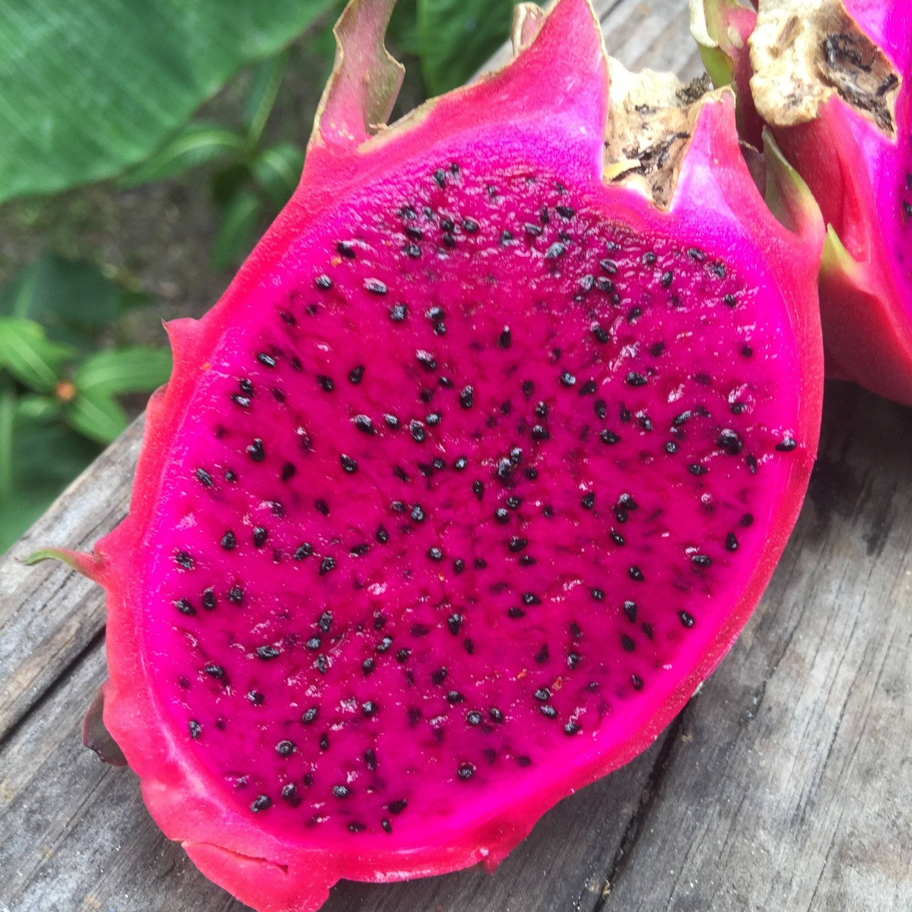
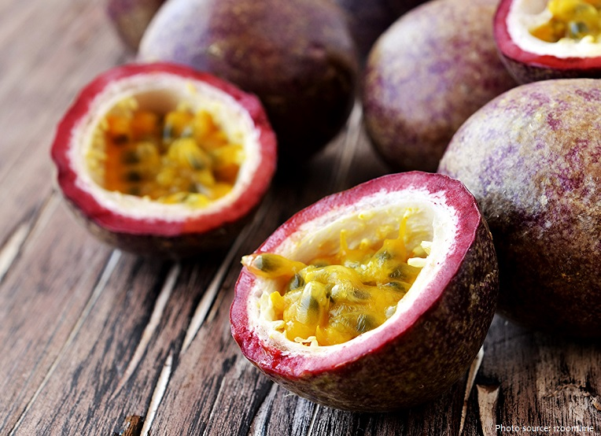
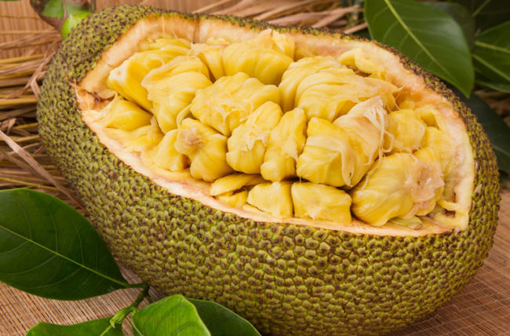

A pitaya (/pɪˈtaɪ.ə/) or pitahaya (/ˌpɪtəˈhaɪ.ə/) is the fruit of several different cactus species indigenous to the region of southern Mexico and along the Pacific coasts of Guatemala, Costa Rica, and El Salvador.[1][2] Pitaya is cultivated in East Asia, South Asia, Southeast Asia, the United States, the Caribbean, Australia, and throughout tropical and subtropical regions of the world.
The passion fruit is so called because it is one of the many species of passion flower, the English translation of the Latin genus name, Passiflora, and may be spelled "passion fruit", "passionfruit", or "passion-fruit".[1][4] Around 1700, the name was given by missionaries in Brazil as an educational aid while trying to convert the indigenous inhabitants to Christianity; its name was flor das cinco chagas or "flower of the five wounds" to illustrate the crucifixion of Christ and his resurrection,[5] with other plant components also named after an emblem in the Passion of Jesus.[4]
The jackfruit (Artocarpus heterophyllus), also known as the jack tree,[7] is a species of tree in the fig, mulberry, and breadfruit family (Moraceae).[8].
